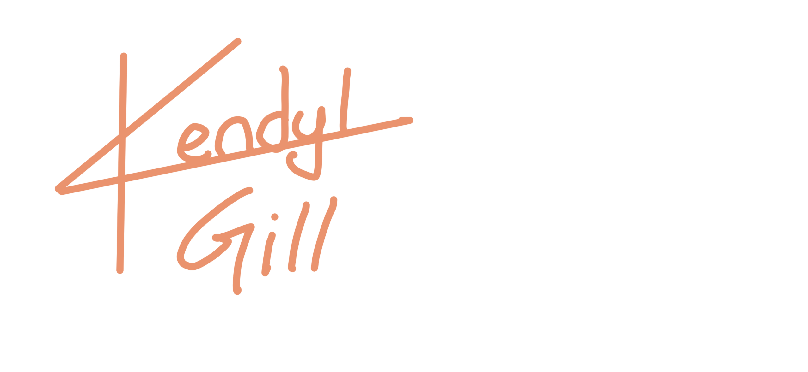

portfolio
About Me
My name is Kendyl Gill, I currently attend University of Waterloo for GBDA, and I’ve been interested in all types of art since I was little.
I attended Eastwood Collegiate Institute, an arts-oriented high school, where I was part of the Visual Arts program. I became interested in graphic design and business during my second year of high school and from then on I knew this is what I wanted to do.
Outside of school I work as a team lead at Roots, and often sell merchandise for country musicians during the summer.
My main design interests are branding, logos, illustration, clothing design and social media content.
Skills
Branding
Illustration
Logo Design
Social Media
Clothing Design
UI/UX